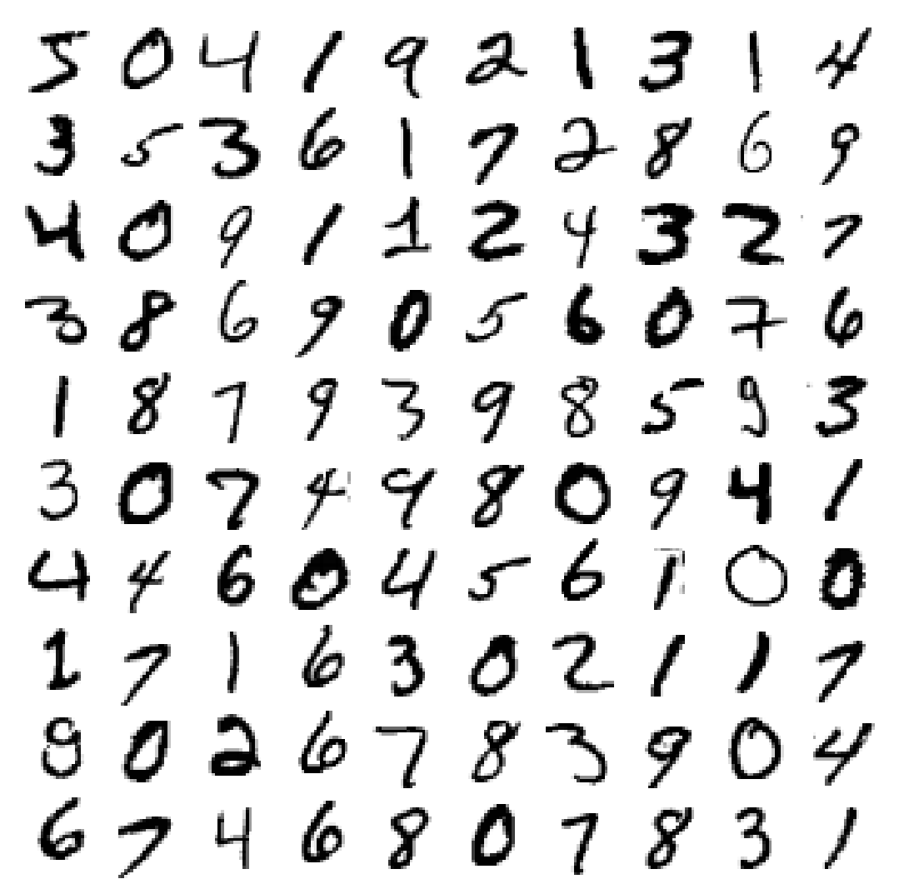
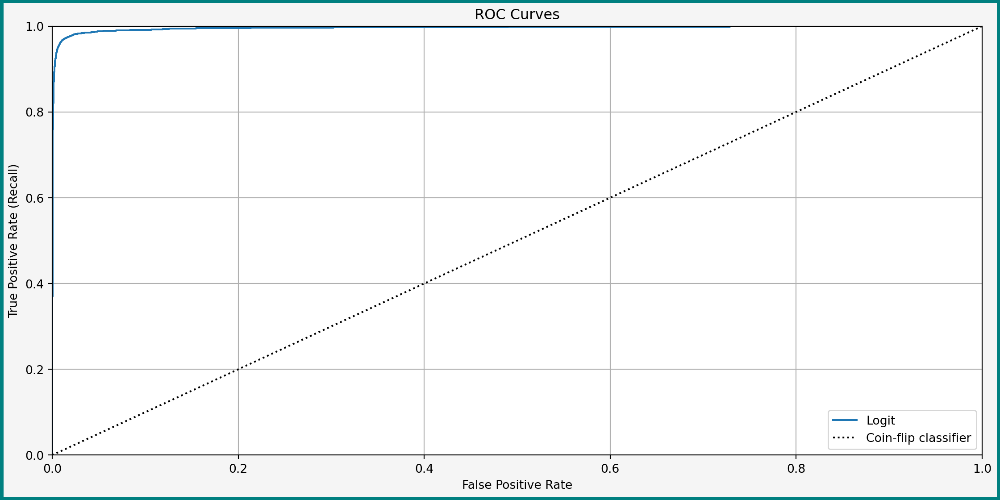
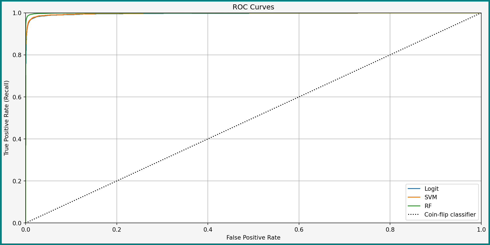
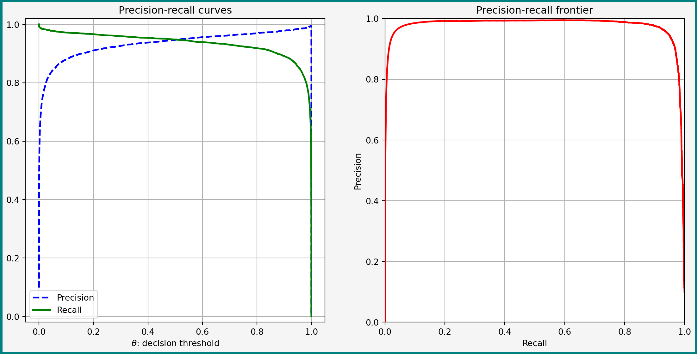
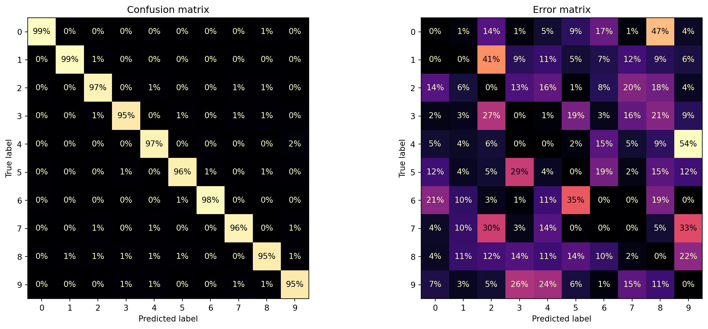

import matplotlib.pyplot as plt
import numpy as np
import pandas as pd
# Obtaining data from openML
from sklearn.datasets import fetch_openml
# Dummy classifier for benchmarking
from sklearn.dummy import DummyClassifier
# Classification random forest
from sklearn.ensemble import RandomForestClassifier
# Logistic regression and SVM classifiers
from sklearn.linear_model import (
LogisticRegression,
SGDClassifier,
)
# Metrics for evaluating classifiers
from sklearn.metrics import (
confusion_matrix,
ConfusionMatrixDisplay,
f1_score,
precision_recall_curve,
precision_score,
recall_score,
roc_auc_score,
roc_curve,
)
# Cross-validation computation of classifier properties
from sklearn.model_selection import (
cross_val_predict,
cross_val_score,
)
# Pipelines
from sklearn.pipeline import Pipeline
# Feature scaler
from sklearn.preprocessing import StandardScalerClassification
Basics of Binary and Multiclass Classification
Vladislav Morozov
Introduction
Lecture Info
Learning Outcomes
In this lecture we take a look at classification
By the end, you should be able to
- Talk about binary and multiclass classification problems
- Describe and use several leading classification algorithms
- Evaluate classifiers with a variety of metrics
References
- Chapters 4, 8-9 in James et al. (2023)
scikit-learnUser Guide: 1.1.11, 1.5, 1.10-1.11- Deeper: chapter 4, 9, 15 in Hastie, Tibshirani, and Friedman (2009)
Imports
Empirical Setup
Motivation I
Suppose that you
- Want to send a postcard to a friend
- Write the address by hand
How do the post offices know where to send the postcard?
Motivation II
- Almost all handwritten addresses are recognized automatically
- Example of computer vision classification problem
- Features: pixels of scanned image
- Labels: letters and numbers
- Goal: recognize the letters and numbers as accurately as possible
Today: focus on recognized handwritten numbers with a nice standardized dataset
Our Empirical Example
Will use MNIST data — modified National Institute of Standards and Technology database
- Large dataset of handwritten digits
- A fundamental dataset: one of the first datasets new methods are tried on
Obtaining the Data
- Can obtain the full dataset from openML
scikit-learneven offers afetch_openml()function for convenience
Data Description
Remember to check your data and perform EDA!
**Author**: Yann LeCun, Corinna Cortes, Christopher J.C. Burges
**Source**: [MNIST Website](http://yann.lecun.com/exdb/mnist/) - Date unknown
**Please cite**:
The MNIST database of handwritten digits with 784 features, raw data available at: http://yann.lecun.com/exdb/mnist/. It can be split in a training set of the first 60,000 examples, and a test set of 10,000 examples
It is a subset of a larger set available from NIST. The digits have been size-normalized and centered in a fixed-size image. It is a good database for people who want to try learning techniques and pattern recognition methods on real-world data while spending minimal efforts on preprocessing and formatting. The original black and white (bilevel) images from NIST were size normalized to fit in a 20x20 pixel box while preserving their aspect ratio. The resulting images contain grey levels as a result of the anti-aliasing technique used by the normalization algorithm. the images were centered in a 28x28 image by computing the center of mass of the pixels, and translating the image so as to position this point at the center of the 28x28 field.
With some classification methods (particularly template-based methods, such as SVM and K-nearest neighbors), the error rate improves when the digits are centered by bounding box rather than center of mass. If you do this kind of pre-processing, you should report it in your publications. The MNIST database was constructed from NIST's NIST originally designated SD-3 as their training set and SD-1 as their test set. However, SD-3 is much cleaner and easier to recognize than SD-1. The reason for this can be found on the fact that SD-3 was collected among Census Bureau employees, while SD-1 was collected among high-school students. Drawing sensible conclusions from learning experiments requires that the result be independent of the choice of training set and test among the complete set of samples. Therefore it was necessary to build a new database by mixing NIST's datasets.
The MNIST training set is composed of 30,000 patterns from SD-3 and 30,000 patterns from SD-1. Our test set was composed of 5,000 patterns from SD-3 and 5,000 patterns from SD-1. The 60,000 pattern training set contained examples from approximately 250 writers. We made sure that the sets of writers of the training set and test set were disjoint. SD-1 contains 58,527 digit images written by 500 different writers. In contrast to SD-3, where blocks of data from each writer appeared in sequence, the data in SD-1 is scrambled. Writer identities for SD-1 is available and we used this information to unscramble the writers. We then split SD-1 in two: characters written by the first 250 writers went into our new training set. The remaining 250 writers were placed in our test set. Thus we had two sets with nearly 30,000 examples each. The new training set was completed with enough examples from SD-3, starting at pattern # 0, to make a full set of 60,000 training patterns. Similarly, the new test set was completed with SD-3 examples starting at pattern # 35,000 to make a full set with 60,000 test patterns. Only a subset of 10,000 test images (5,000 from SD-1 and 5,000 from SD-3) is available on this site. The full 60,000 sample training set is available.
Downloaded from openml.org.Splitting the Data
Split the data manually into X and y arrays
['5' '0' '4' '1' '9' '2' '1' '3' '1' '4']Data already sorted into training and test split (see DESCR)
- 10k training examples
- There are extended datasets with bigger test sets
Visualizing the Data

Lecture Plan
Will focus on
- Basic learning algorithms for binary and multiclass classification
- Evaluating classifiers
We will not talk much about EDA, data preparation, etc. (see previous two lectures), but those are equally important for classification!
Classification
Binary vs. Multiclass Classification
Recall:
- In binary classification the label takes on 2 possible values
- In multiclass classification the label takes on \(k>2\) possible values
The labels can be ordered (e.g. “big”, “medium”, “small”) or unordered (e.g. “cat”, “dog”)
Division between multiclass classification with ordered numerical labels and large \(k\) and regression not always clear
Single-Output vs. Multi-Output Classification
Another axis of difference between problems:
- In single-output problems the label \(Y\) is one-dimensional
- In multi-output problems \(Y\) can be multidimensional
Example of multi-output problem: labeling photos by their contents. Many kinds of items can be present in photos at the same time
Indicator Risk
Recall: should start the learning problem by choosing a suitable criterion — ideally a risk function
Already met the indicator risk: \[ R(h) = \E\Big[\I\curl{Y\neq h(\bX)} \Big] = P\Big(Y\neq h(\bX)\Big) \]
\(1-R(h)\) is known as accuracy
Drawbacks of Accuracy
- Treats all errors equally, which might not be the right thing in a context
- Problematic with unbalanced classes
- Example: 1 unit of class
0per 999 units of class1 - A classifier that always predicts
1has 99.9% accuracy, but is 0% right on class0
- Example: 1 unit of class
- Often impossible to minimize (\(\Rightarrow\) surrogate losses)
Accuracy has some more issues, see here
Other Metrics
\(\Rightarrow\) very common to consider various metrics
- Criteria expressable as risk functions (e.g. weighted losses with potentially different costs of different errors)
- Ratio metrics such as precision, recall
Classifiers may be tuned:
- Usually first found based on some tractable objetive function (e.g. QML)
- Then tuned to optimize specific aspects
Binary Classification Algorithms
Setting: Labels in Binary Classification
Two equivalent ways of expressing classes:
Labels expressed as 0 and 1 \[ Y \in \curl{0, 1} \] Common to logit and generalizations (including NNs)
Labels expressed as \(-1\) and 1 \[ Y\in \curl{-1, 1} \] Often see with support vector machines
Does not matter in practice, but sometimes one or the other is more convenient in theory
Empirical Example
Our example based on MNIST data:
Detect that a given collection of pixels represents a '0' or not
Create the new binary labels:
Linear Classifiers
Like with regression one can have linear and nonlinear classifiers
Linear classifiers generally take form \[ \Hcal = \curl{h(\bx) = \I\curl{f\left(\varphi(\bx)'\bbeta\right) > \theta}: \bbeta\in \R^{\dim(\varphi(\bbeta))} } \tag{1}\]
- \(f(\cdot)\) and \(\varphi(\cdot)\) are known functions
- \(\theta\) is a tunable threshold
Examples of Linear Classifiers: Logit
Logistic regression (0, 1 labels) \[
\begin{aligned}
h(\bx) & = \I\curl{ \Lambda( \varphi(\bx)'\bbeta ) \geq \theta }, \\
\Lambda(x) & = \dfrac{1}{1+\exp(-x)}
\end{aligned}
\]
Here
- \(\bbeta\) learned using quasi maximum likelihood
- Default value for \(\theta\) is 0.5
Examples of Linear Classifiers: SVM
Support vector machines (-1, +1 labels) \[
h(\bx) = \mathrm{sign}\curl{ \varphi(\bx)'\bbeta - \theta }
\] More on SVMs later
Here
- \(\bbeta\) chosen to maximize the separating margin between classes (with some tolerance of errors)
- Default value of \(\theta\) is 0
Nonlinear Classifiers
Many classifiers cannot be represented in form (1)
The most relevant examples:
- Decision trees and their ensembles (random forests and gradient boosted machines)
- Neural networks with nonlinear activation functions
- Nearest neigbhors
Logistic Regression
Objective Function
Classifier \[ \small h(\bx) = \I\curl{ \Lambda( \varphi(\bx)'\bbeta ) \geq \theta } \]
\(\bbeta\) chosen by maximizing (penalized) quasi-log likelihood: \[ \tiny \hat{\bbeta}^{QML} = \argmax_{\bb} \sum_{i=1}^N\left[Y_i \log(\Lambda( \bX_i'\bbeta )) + (1-Y_i) \log\left( 1 - \Lambda( \bX_i'\bbeta ) \right) \right] + \alpha \Pcal(\bbeta) \] Recall interpretation: model learning to predict probabilities of \(Y=1\) with \(\Lambda(\bX'\beta)\)
Logistic Regression in scikit-learn
Two main ways:
LogisticRegressionSGDClassifierwithloss=log_loss
Main difference between the two — optimization method
LogisticRegressionuses whole sample simultaneously (and also Hessian information)SGDClassifieruses stochastic gradient descent — updates parameter guess using gradient evaluated a single example at a time
Most ML books discuss SGD. For example, see ch. 14 in Shalev-Shwartz and Ben-David (2014)
Illustration: Logistic Regression
For example:
logit = Pipeline(
[
('scale', StandardScaler()),
('logit', LogisticRegression(penalty=None))
]
)
logit.fit(X_train, y_train_0)
logit.predict([X_train[0, :]]) == y_train_0[0]array([ True])- Managed to predict the first training sample right
- But how good is it overall?
Support Vector Machines
Linear SVM: Classifier
Consider first linear case:
- Some feature \(\bX\)
- Binary label \(Y\in \curl{-1, 1}\)
Classifier takes form \[ h(\bx) = \mathrm{sign}\curl{ \bx'\bbeta + c \geq 0 } \] Decision depends on which side of the hyperplane \(\bx'\bbeta+c=0\) the new point falls
Illustration: Separable Classes

- Suppose classes can be separated linearly
- Then usually many possible separating hyperplanes (different \(\bbeta\))
“Safest” classifier — one that separates classes with maximum margin (right plot)
Illustration: figure 5.1 in Mohri, Rostamizadeh, and Talwalkar (2018)
Nonseparable Case

If classes not separable
- Accept that some errors will happen, try to minimize them
- Try to maximize the margin between the separated points
Linear SVM: Learning Problem
\[ \begin{aligned} & \min_{\bbeta, c, \bxi} \dfrac{1}{2} \norm{\bbeta}_2^2 + C\sum_{i=1}^m \xi_i^p, \\ & \text{s.t.} \forall i: Y_i(\bbeta'\bX_i+ c) \geq 1-\xi_i, \quad \xi_i\geq 0. \end{aligned} \]
Has to balance two things:
- Maximizing margin (=minimizing norm of \(\bbeta\))
- Not making too many errors \(\xi_i\)
- \(C\) and \(p\) are tuning parameters
For full mathematical details, see chapter 5 in Mohri, Rostamizadeh, and Talwalkar (2018)
Linear SVM: Learning Problem Discussion
- Typical values for \(p\) are \(p=1\) and \(p=2\)
- There are other expressions for objective. E.g. with \(p=1\) can express as penalized ERM with hinge loss \[ \small \begin{aligned} \argmin_{\bbeta, c} & \hspace{3mm} C' \norm{\bbeta}_2^2+\frac{1}{m}\sum_{i=1}^m l_h(1-Y_i(\bbeta'\bX_i-c))\\ l_h(x) & = \max\curl{0, 1-x} \end{aligned} \]
The SVM name comes from the fact that solution is determined by only certain specific observations called support vectors (on dashed lines in figure before)
Nonlinear SVMs

One can allow classifier to be nonlinear in \(\bX\)
\[ h(\bx) = \mathrm{sign}\curl{ \varphi(\bx)'\bbeta + c \geq 0 } \]
Kernel Trick
SVMs allow easily working with very high-dimensional \(\varphi(\bx)\)
Key reason — property called the kernel trick. Essentially:
- You often don’t need to explicitly compute each \(\varphi(\bx)\) (may be slow if \(\varphi\) has large dimension)
- Sufficient to find a function called kernel that implicitly represents the geometry of the new space
Popular kernels include polynomials (finite-dimensional) and radial basis functions (infinite-dimensional)
See chapter 16 in Shalev-Shwartz and Ben-David (2014)
Advantages and Disadvantages of SVMs
Advantages:
- Can work with potentially infinite-dimensional features
- Theoretically because SVMs performance depends only on margin, but not dimension
- Practically thanks to the kernel trick
- More resistant to overfitting
- Very quick prediction
The main disadvantage: scale poorly in terms of sample size (sweet spot seems to be \(<100\)k examples)
SVMs in scikit-learn
Linear SVMs implemented in several classes in scikit-learn:
SGDClassifierwith lossloss='hinge'(orsquared_hinge, orperceptron)LinearSVC: faster implementation only for linear SVMsSVC: supports kernel trick and various standard kernels, but slower
“Linear SVM” means that if you want to use \(\varphi(\bx)\), you have to explicitly compute those yourself as part of data preparation
Fitting an SVM
Fitting as easy as always:
Classification Trees and Forests
Fitting a Classification Forest
To complete the picture, can add a tree-based classifier — RandomForestClassifier. RF classifiers very similar to RF regressors (last lecture)
Evaluating Classifiers
Scalar Metrics
Evaluating Binary Classifiers
How does one evaluate a classifier?
Several metrics:
- Accuracy
- Confusion matrix
- Precision and recall, \(F_{\beta}\) scores
- The ROC curve and area under the curve (AUC)
Accuracy
First metric — accuracy
- Accuracy — proportion of correctly classified new points
- Can again evaluate with CV using
cross_val_score
Benchmark
We have 98.65% accuracy. Is that good?
Important to always have a basic benchmark
- Can use
DummyClassifierfromsklearn.dummyas benchmark - Benchmark strategy: predicting the most popular class (“not 0”)
Accuracy of dummy classifier
np.float64(0.9012833333333333)Confusion Matrix: Intro
- Accuracy combines all errors into one number
- But maybe want to decompose more carefully
Some terminology:
- Correct predictions: are true positive (TP) and true negative (TN)
- Incorrect predictions are false positive (FP, type I error) and false negative (FN, type II error)
Confusion Matrix: Enumerating TP, TN, FP, FN
- \((i, j)\)th element — number of observations of class \(i\) labeled as class \(j\)
- Correct way to evaluate — using cross-validation (to get more accurate picture of classifier’s performance)
y_train_pred_logit = cross_val_predict(logit, X_train, y_train_0, cv=5, n_jobs=-1)
# Compute the confusion matrix
confusion_matrix(
y_train_0,
y_train_pred_logit,
).round(4)array([[53763, 314],
[ 307, 5616]])Remember to keep track of what the classes are: class 0 is not 0, class 1 is '0'
Confusion Matrix: Normalizing By Rows or Columns
If we row-normalize confusion matrix, second row — proportions of 0 identified as “not 0” and 0
# Compute the confusion matrix
confusion_matrix(
y_train_0,
y_train_pred_logit,
normalize='true',
).round(4)array([[0.9942, 0.0058],
[0.0518, 0.9482]])Can see: logit very good at detecting not 0s, but marks around 5.1% percents of 0s as not 0s
Precision and Recall: Definitions
Two important metrics related to confusion matrix \[ \small \begin{aligned} \text{Precision} & = \dfrac{TP}{TP+FP}, \\ \text{Recall} & = \dfrac{TP}{TP+FN} \end{aligned} \]
- Precision: how often the
'0'label is right - Recall: how many of the
'0's are detected
Precision and Recall: Computing
- Can compute precision and recall from normalized confusion matrix (by column and by row, respectively. Think how)
- Or use special functions from
sklearn.metrics:
print(f"Precision: {np.round(precision_score(y_train_0, y_train_pred_logit), 3)}")
print(f"Recall: {np.round(recall_score(y_train_0, y_train_pred_logit), 3)}")Precision: 0.947
Recall: 0.948Very close in terms of both
\(F\)-Scores
Precision and recall can be combined into a single metric using \(F_{\beta}\) score
Most famous — the \(F_1\) score: \[ F_1 = \dfrac{ 2 }{ \frac{1}{\text{Recall}} + \frac{1}{\text{Precision}} } \]
We can compute it using f1_score() from sklearn.metrics:
Comparing Different Classifiers
- So now we can compare the different classifiers we trained on several metrics
- Compare based on \(F_1\):
Logit: 0.948
SVM: 0.944
RF: 0.971Random forests come out ahead!
Curves
Regarding Decision Thresholds
Go back to logit classifier: \[ h(\bx) = \I\curl{ \Lambda( \varphi(\bx)'\bbeta ) \geq \theta } \]
- By default \(\theta = 0.5\) — label observation as 1 if predicted probability of 1 is higher than of 0
- But can change \(\theta\). E.g. lowering \(\theta\):
- More true positives
- More false positives
ROC Curve
The ROC (receiver operator characteristic) curve shows the relationship true and false positives rates (TPR vs. FPR)
- Computed by changing \(\theta\) (between 0 and 1 for logit)
- In practice:
- Compute the scores \(\Lambda(\bX_i'\hat{\bbeta})\) for each observation
- For each \(\theta\), compute which observations labeled as positive or negative by comparing \(\Lambda(\bX_i'\hat{\bbeta})\) and \(\theta\)
- Compute the scores \(\Lambda(\bX_i'\hat{\bbeta})\) for each observation
ROC Curve in Practice
In scikit-learn can use cross_val_predict() for scores and roc_curve for ROC curve
ROC Curve for Logit

ROC Curve: Discussion
- Ideal classifier: FPR = 0, TPR = 1 (upper left corner)
- Better classifiers: ROC curve close to the upper left corner
- Can compute for any classifier with tunable \(\theta\)
- Including random forest and SVM
- Not for a single decision tree
ROC Curves for All Classifiers

AUC
Area under curve (AUC) is the area under the ROC curve
- Bigger AUC is better
- Ideal classifiers: AUC = 1
- Compute with
roc_auc_score():
Precision-Recall Curve
- ROC curves compare FPR and TPR (recall)
- Another trade-off — between recall/TPR and precision
Precision-Recall Curve for Logit

Precison-Recall Curve: Discussion
- Curve shows trade-off for most of \(\theta\)
- For \(\theta\uparrow 1\) both recall and precision eventually fall
- Reason: \(\Lambda \in (0, 1)\) — eventually no observation gets positive label
- Precision becomes 0/0
scikit-learnevaluates that as 0 precision
Conclusion: Metrics
Dicussed many metrics for binary classifiers
- Which one matters depends on contexts
- Sometimes want more recall or precision
- Recall: preventing crime (catching all criminals)
- Precision: detecting spam (want to be certain of spam labels)
- Some classifiers can be tuned on decision threshold
Basics of Multiclass Classification
Multiclass Classification Algorithms
Setting and Example
In a (single-output) multiclass setting \(Y\) can belong to one of \(k\) classes
Example based on MNIST data
Detect which of '0', '1', …, '9' a given collection of pixels represents
Classification Strategies
- Use classifier that can handle multiple classes directly
- Use several binary clssifiers:
- One-versus-all: for each class \(j\), train classifier for the problem \(Y=j\) vs. \(Y\neq j\). Predict class \(k\) with maximum “confidence” that \(Y=k\)
- One-versus-one: train a binary classifier for each pair of classes. Predict based on majority rule
Multinomial Logit (Direct)
Suppose that classes are labeled with \(j=1, \dots, k\)
Multinomial logistic classifiers \[ h(\bx) = \argmax_{j=1, \dots, k} \curl{ \dfrac{ \exp(\varphi(\bx)'\bbeta_j) }{ \sum_{l=1}^k \exp(\varphi(\bx)'\bbeta_l) } } \]
- Predicts probability for each class
- Selects class with highest predicted probability
Multinomial Logit in scikit-learn
LogisticRegression in scikit-learn automatically is multi-class by default. Trained the same way as before:
logit = Pipeline(
[
('scale', StandardScaler()),
('logit', LogisticRegression(penalty=None, max_iter=1000))
]
)
logit.fit(X_train, y_train) # Use the full labels
logit.predict([X_train[0, :]]) == y_train[0]array([ True])Predicts probabilities of each class:
array([[0.004, 0. , 0. , 0.188, 0. , 0.808, 0. , 0. , 0. ,
0. ]])Decision Trees and Random Forests
Decision trees and everything based on them can also directly learn multiple labels
SVMs (Binary Collection)
SVMs are binary-only: have to use OvO or OvA. scikit-learn handles that automatically
svm = Pipeline(
[
('scale', StandardScaler()),
('svm', SGDClassifier(random_state=1, n_jobs=-1))
]
)
svm.fit(X_train, y_train)
print(svm.decision_function([X_train[0, :]]).round(2))
print(svm.classes_)
print(svm.predict([X_train[0, :]]))[[-1078.89 -1077.14 -438.67 -14.08 -1669.25 -9.65 -1726.31 -668.26
-102.42 -639.22]]
['0' '1' '2' '3' '4' '5' '6' '7' '8' '9']
['5']You can set the strategy directly using special OneVsOneClassifier and OneVsRestClassifier classes
Evaluating Multiclass Classifiers
Evaluating Multiclass Classifiers
Key basic metrics:
- Accuracy
- Confusion matrices
Can also use pairwise precisions, recalls, ROC curves etc. These can be averaged or not
Accuracy
Accuracy: evaluate as before
Computing accuracy of our classifiers
Logit: 0.908
RF: 0.966- Logit right about 90% of the time
- RF right around 96.6% of the time
- Both below the 98.5% human accuracy benchmark
- That threshold hard to break with “shallow” methods (An et al. 2020), but CNNs achieve >99% accuracy
Confusion Matrix for Random Forest
- Confusion matrices also computed as before
- With \(k\) classes confsion matrices are \(k\times k\)
# Compute predictions
y_train_pred = cross_val_predict(rf, X_train, y_train, cv=5, n_jobs=-1)
# Build confusion matrix from predictions
confusion_matrix(
y_train,
y_train_pred,
normalize='true',
).round(3)[0:4, 0:4]array([[0.987, 0. , 0.002, 0. ],
[0. , 0.986, 0.006, 0.001],
[0.005, 0.002, 0.967, 0.004],
[0.001, 0.001, 0.014, 0.947]])Readable Matrices with ConfusionMatrixDisplay

Error matrix: proportion of errors. Helps to see which digits mistaken for which ones
Recap and Conclusions
Lecture Recap
Recap
In this lecture we
- Discussed basics of binary and multiclass classification
- Introduced several classification algorithms
- Talked about evaluating classifiers with a variety of metrics
Block Conclusions
Overal Concluding Thoughts
A look at machine learning, particularly supervised:
- Key pieces of formalizing problems (risk, hypothesis classes)
- Motivation for acquiring specialized knowledge (no-free-lunch theorem)
- Some algorithms for
- Regression
- Classification
- Validating and testing approaches
The Many Paths Forward
- Diving into theory (e.g. with Mohri, Rostamizadeh, and Talwalkar (2018))
- Unsupervised learning (see Hastie, Tibshirani, and Friedman (2009))
- There are still more “shallow” learning algorithms, such as gradient boosting (see either of above books)
- Deep learning (see Bishop and Bishop (2024))
- Field-specific applications (natural language processing, computer vision, recommenders, …)
References
An, Sanghyeon, Minjun Lee, Sanglee Park, Heerin Yang, and Jungmin So. 2020. “An Ensemble of Simple Convolutional Neural Network Models for MNIST Digit Recognition.” arXiv. https://doi.org/10.48550/arXiv.2008.10400.
Bishop, Christopher M., and Hugh Bishop. 2024. Deep Learning: Foundations and Concepts. Cham: Springer International Publishing. https://doi.org/10.1007/978-3-031-45468-4.
Hastie, Trevor, Robert Tibshirani, and J. H. Friedman. 2009. The Elements of Statistical Learning: Data Mining, Inference, and Prediction. 2nd ed. Springer Series in Statistics. New York, NY: Springer.
James, Gareth, Daniela Witten, Trevor Hastie, Robert Tibshirani, and Jonathan E. Taylor. 2023. An Introduction to Statistical Learning: With Applications in Python. Springer Texts in Statistics. Cham: Springer.
Mohri, Mehryar, Afshin Rostamizadeh, and Ameet Talwalkar. 2018. Foundations of Machine Learning. The MIT Press. https://doi.org/10.5555/3360093.
Shalev-Shwartz, Shai, and Shai Ben-David. 2014. Understanding Machine Learning. 1st ed. West Nyack: Cambridge University Press.
Simard, Patrice, Yann Le Cun, and John Denker. 1992. “Efficient Pattern Recognition Using a New Transformation Distance.” In Proceedings of the 6th International Conference on Neural Information Processing Systems, 50–58. NIPS’92. San Francisco, CA, USA: Morgan Kaufmann Publishers Inc.
Classification